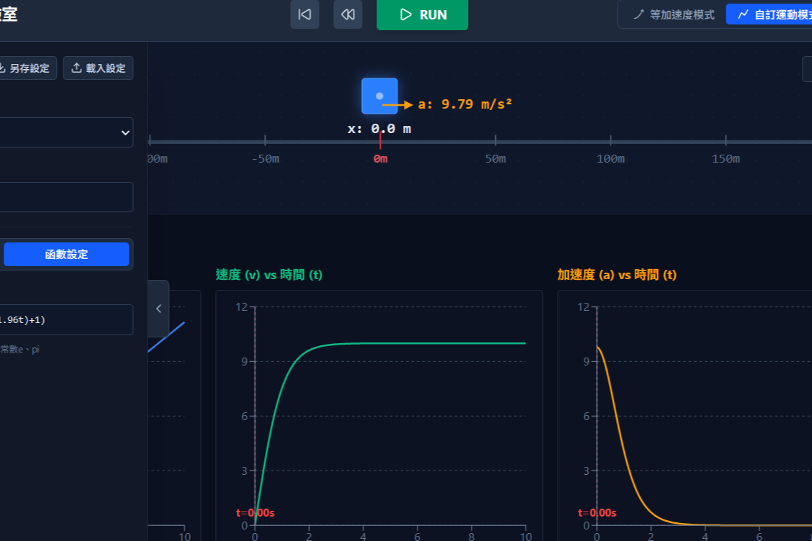

香蕉老師的教學模擬分享，透過即時互動與視覺化，讓物理化學更具象
調整頻率、振幅與波速，觀察橫波、縱波傳播特性與介質質點振動的即時關係。

探索位置、速度與加速度的向量關係，並透過數據圖表分析等加速與二維拋體運動。
自由串聯與並聯電池、電阻與燈泡，即時量測電壓與電流變化，驗證歐姆定律。
模擬水晶體焦距調節、近視與遠視成因，並觀察凹凸透鏡如何修正光線聚焦於視網膜。
自由增減質子、中子與電子，觀察原子序、質量數、電荷狀態與元素穩定度的變化。
找不到同時符合目前篩選條件的模擬。